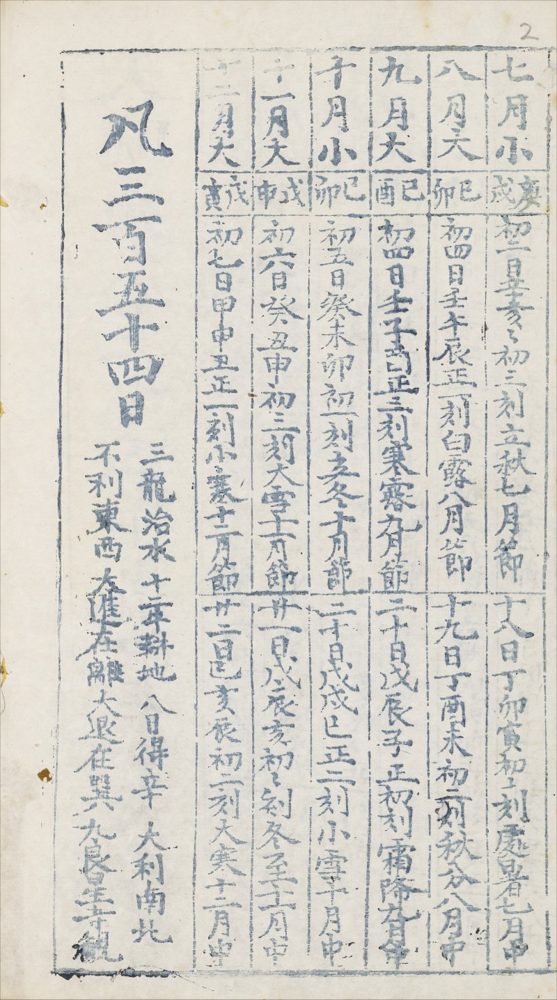
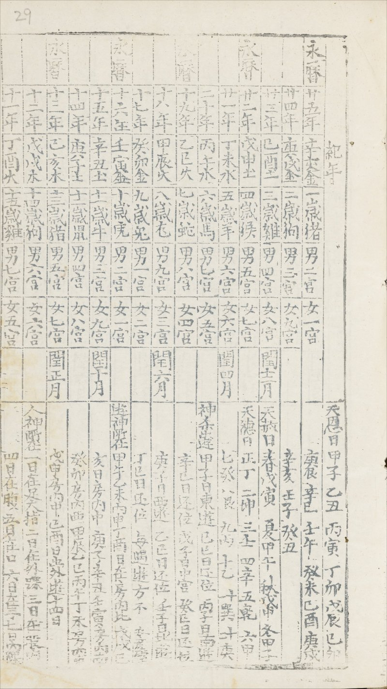
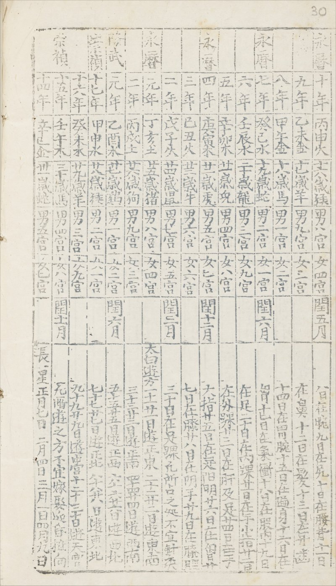

大 明 中 兴 永 历 二 十 五 年 大 统 历 (1671)
图 片 来 源: Bodleian Library Sinica 58
图 片 版 权 持 有 者: © Bodleian Libraries, University of Oxford (本网页只是转载图片，网主并非版权持有者)
使 用 条 款: CC BY-NC 4.0 版 权 条 款。 详 情 请 参 阅 https://digital.bodleian.ox.ac.uk/terms/
备注: 以下图片经过剪截及缩小。这里只提供历书数页载有朔闰和节气的图片，全书的电子版可从上面的连结获取。图片下附有文字抄录图片的资料。
图 片

文 字
大 明 中 興 永 曆 二 十 五 年 大 統 曆
嗣藩 頒製
皇曆遙頒未至本藩權宜命官依
大統曆法考正刊行俾
中興臣子咸知
正朔海內士民均沾厥福用是為識
注: 永历十五年永历帝滇中遇害，明统告绝，明「皇历」亦绝，明郑颁行的大统历变相成为当时正统的大统历书。
图 片


文 字
| 大明永曆二十五年歲次辛亥大統曆 | |||
| 正月小 | 甲寅 | 十一日甲子午正初刻雨水正月中 | 廿六日己卯酉初一刻京直二月節 |
| 二月小 | 癸未 | 十二日甲午亥正二刻春分二月中 | 廿八日庚戌寅初三刻清明三月節 |
| 三月大 | 壬子 | 十四日乙丑巳初初刻谷雨三月中 | 廿九日庚辰未正一刻立夏四月節 |
| 四月小 | 壬午 | 十四日乙未戌初二刻小滿四月中 | |
| 五月小 | 辛亥 | 初一日辛亥子正三刻芒種五月節 | 十六日丙寅卯正初刻夏至五月中 |
| 六月大 | 庚辰 | 初二日辛巳午初一刻小暑六月節 | 十七日丙申申正二刻大暑六月中 |
| 七月小 | 庚戌 | 初二日辛亥亥初三刻立秋七月節 | 十八日丁卯寅初初刻處暑七月中 |
| 八月大 | 己卯 | 初四日壬午辰正一刻白露八月節 | 十九日丁酉未初二刻秋分八月中 |
| 九月大 | 己酉 | 初四日壬子酉正三刻寒露九月節 | 二十日戊辰子正初刻霜降九月中 |
| 十月小 | 己卯 | 初五日癸未卯初一刻立冬十月節 | 二十日戊戌巳正二刻小雪十月中 |
| 十一月大 | 戊申 | 初六日癸丑申初三刻大雪十一月節 | 廿一日戊辰亥初初刻冬至十一月中 |
| 十二月大 | 戊寅 | 初七日甲申丑正一刻小寒十二月節 | 廿二日己亥辰初二刻大寒十二月中 |
| 凡三百五十四日 (占卜文字从略) | |||
注:依明大统历推算正月癸丑朔，与此历不合，其余朔日符合大统历推步。节气干支日期和时刻全部符合大统历推步。
图 片


文 字
下表略去图片里最后一行
| 紀年 | ||||||
| 永 曆 | 廿五年 | 辛亥金 | 一歲豬 | 男二宮 | 女一宮 | |
| 廿四年 | 庚戌金 | 二歲狗 | 男三宮 | 女九宮 | ||
| 廿三年 | 己酉土 | 三歲雞 | 男四宮 | 女八宮 | 閏十二月 | |
| 廿二年 | 戊申土 | 四歲猴 | 男五宮 | 女七宮 | ||
| 廿一年 | 丁未水 | 五歲羊 | 男六宮 | 女六宮 | 閏四月 | |
| 二十年 | 丙午水 | 六歲馬 | 男七宮 | 女五宮 | ||
| 十九年 | 乙巳火 | 七歲蛇 | 男八宮 | 女四宮 | ||
| 十八年 | 甲辰火 | 八歲龙 | 男九宮 | 女三宮 | 閏六月 | |
| 十七年 | 癸卯金 | 九歲兔 | 男一宮 | 女二宮 | ||
| 十六年 | 壬寅金 | 十歲虎 | 男二宮 | 女一宮 | ||
| 十五年 | 辛丑土 | 十一歲牛 | 男三宮 | 女九宮 | 閏十月 | |
| 十四年 | 庚子土 | 十二歲鼠 | 男四宮 | 女八宮 | ||
| 十三年 | 己亥木 | 十三歲豬 | 男五宮 | 女七宮 | 閏正月 | |
| 十二年 | 戊戌木 | 十四歲狗 | 男六宮 | 女六宮 | ||
| 十一年 | 丁酉火 | 十五歲雞 | 男七宮 | 女五宮 | ||
| 十年 | 丙申火 | 十六歲猴 | 男八宮 | 女四宮 | 閏五月 | |
| 九年 | 乙未金 | 十七歲羊 | 男九宮 | 女三宮 | ||
| 八年 | 甲午金 | 十八歲馬 | 男一宮 | 女二宮 | ||
| 七年 | 癸巳水 | 十九歲蛇 | 男二宮 | 女一宮 | 閏六月 | |
| 六年 | 壬辰水 | 二十歲龍 | 男三宮 | 女九宮 | ||
| 五年 | 辛卯木 | 廿一歲兔 | 男四宮 | 女八宮 | ||
| 四年 | 庚寅木 | 廿二歲虎 | 男五宮 | 女七宮 | 閏十二月 | |
| 三年 | 己丑火 | 廿三歲牛 | 男六宮 | 女六宮 | ||
| 二年 | 戊子火 | 廿四歲鼠 | 男七宮 | 女五宮 | 閏三月 | |
| 元年 | 丁亥土 | 廿五歲豬 | 男八宮 | 女四宮 | ||
| 隆 武 | 二年 | 丙戌土 | 廿六歲狗 | 男九宮 | 女三宮 | |
| 元年 | 乙酉水 | 廿七歲雞 | 男一宮 | 女二宮 | 閏六月 | |
| 崇 禎 | 十七年 | 甲申水 | 廿八歲猴 | 男二宮 | 女一宮 | |
| 十六年 | 癸未水 | 廿九歲羊 | 男三宮 | 女九宮 | ||
| 十五年 | 壬午木 | 三十歲馬 | 男四宮 | 女八宮 | 閏十一月 | |
| 十四年 | 辛巳金 | 卅一歲蛇 | 男五宮 | 女七宮 | ||
注:依明大统历推算永历四年闰十一月、永历七年闰七月，与此表不合，奇怪的是后来明郑颁行的永历三十年大统历和永历三十一年大统历却记永历七年闰八月，与大统历推步及此表都不合。